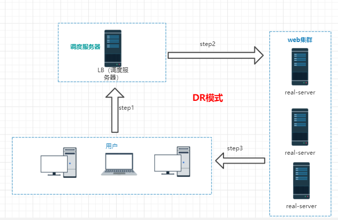
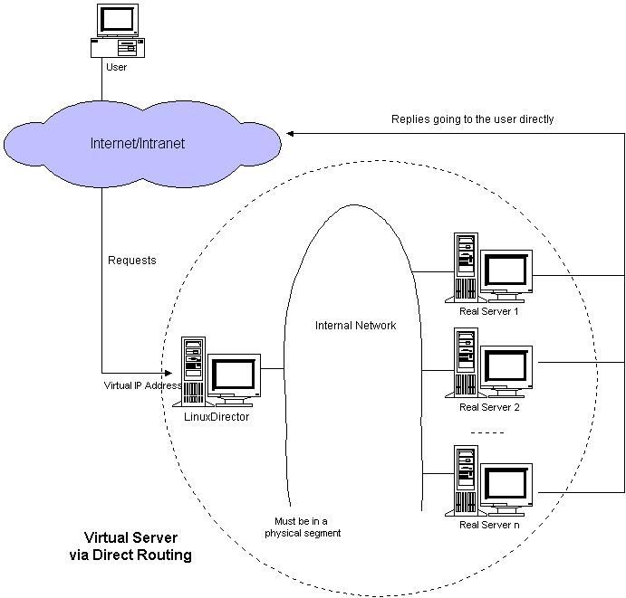

负载均衡集群是 load balance 集群的简写，翻译成中文就是负载均衡集群。常用的负载均衡开源软件有nginx、lvs、haproxy，商业的硬件负载均衡设备F5、Netscale。这里主要是学习 LVS 并对其进行了详细的总结记录。
集群
- 集群：cluster
**很多台机器做一样事情（提供一样的功能）** - nginx默认是处理1024个并发
- 如果用户增多
- 增加硬件
- 32G
- 4core
- 200G
- 10M
- 集群
- 增加硬件
- 如果用户增多
- 集群：
1.成本 2.性能 3.稳定性--》是否需要停止服务 4.高可用型--》优势 5.维护方面 6.扩展性--》再加、减
LVS
LB集群的架构和原理很简单，就是当用户的请求过来时，会直接分发到Director Server上，然后它把用户的请求根据设置好的调度算法，智能均衡地分发到后端真正服务器(real server)上。为了避免不同机器上用户请求得到的数据不一样，需要用到了共享存储，这样保证所有用户请求的数据是一样的。
含义
LVS的基本工作原理
- 1. 当用户向负载均衡调度器（Director Server）发起请求，调度器将请求发往至内核空间
2. PREROUTING链首先会接收到用户请求，判断目标IP确定是本机IP，将数据包发往INPUT链
3. IPVS是工作在INPUT链上的，当用户请求到达INPUT时，IPVS会将用户请求和自己已定义好的集群服务进行比对，如果用户请求的就是定义的集群服务，那么此时IPVS会强行修改数据包里的目标IP地址及端口，并将新的数据包发往POSTROUTING链
4. POSTROUTING链接收数据包后发现目标IP地址刚好是自己的后端服务器，那么此时通过选路，将数据包最终发送给后端的服务器
LVS相关术语
\1. DS：Director Server。指的是前端负载均衡器节点。
\2. RS：Real Server。后端真实的工作服务器。
\3. VIP：向外部直接面向用户请求，作为用户请求的目标的IP地址。
\4. DIP：Director Server IP，主要用于和内部主机通讯的IP地址。
\5. RIP：Real Server IP，后端服务器的IP地址。
\6. CIP：Client IP，访问客户端的IP地址。下边是三种工作模式的原理和特点总结。
LVS的三种模式
NAT—》比较简单
- Virtual Server via Network Address Translation（VS/NAT）–》NAT
通过网络地址转换，调度器重写请求报文的目标地址，根据预设的调度算法，将请求分派给后端的真实服务器；真实服务器的响应报文通过调度器时，报文的源地址被重写，再返回给客户，完成整个负载调度过程。 

- Virtual Server via Network Address Translation（VS/NAT）–》NAT
tunnel:隧道模式 –》用的不多
- Virtual Server via IP Tunneling（VS/TUN）–>隧道–》tunnel
采用N AT技术时，由于请求和响应报文都必须经过调度器地址重写，当客户请求越来越多时，调度器的处理能力将成为瓶颈。为了解决这个问题，调度器把请求报 文通过IP隧道转发至真实服务器，而真实服务器将响应直接返回给客户，所以调度器只处理请求报文。由于一般网络服务应答比请求报文大许多，采用 VS/TUN技术后，集群系统的最大吞吐量可以提高10倍。 
- Virtual Server via IP Tunneling（VS/TUN）–>隧道–》tunnel
直接路由(DR)—》性能好，速度快
- Virtual Server via Direct Routing（VS/DR）—》直接路由（DR）
VS/DR通过改写请求报文的MAC地址，将请求发送到真实服务器，而真实服务器将响应直接返回给客户。同VS/TUN技术一样，VS/DR技术可极大地 提高集群系统的伸缩性。这种方法没有IP隧道的开销，对集群中的真实服务器也没有必须支持IP隧道协议的要求，但是要求调度器与真实服务器都有一块网卡连 在同一物理网段上。 - 
- 
- Virtual Server via Direct Routing（VS/DR）—》直接路由（DR）
8种负载调度算法
针对不同的网络服务需求和服务器配置，IPVS调度器实现了如下八种负载调度算法
轮叫/轮询（Round Robin）
- 调度器通过”轮叫”调度算法将外部请求按顺序轮流分配到集群中的真实服务器上，它均等地对待每一台服务器，而不管服务器上实际的连接数和系统负载。
- 简称”RR”
加权轮叫（Weighted Round Robin）
- 调度器通过”加权轮叫”调度算法根据真实服务器的不同处理能力来调度访问请求。这样可以保证处理能力强的服务器处理更多的访问流量。调度器可以自动问询真实服务器的负载情况，并动态地调整其权值。
- 简称“WRR”
最小链接（Least Connections）
- 调度器通过”最少连接”调度算法动态地将网络请求调度到已建立的链接数最少的服务器上。如果集群系统的真实服务器具有相近的系统性能，采用”最小连接”调度算法可以较好地均衡负载。
加权最少链接（Weighted Least Connections）
- 在集群系统中的服务器性能差异较大的情况下，调度器采用”加权最少链接”调度算法优化负载均衡性能，具有较高权值的服务器将承受较大比例的活动连接负载。调度器可以自动问询真实服务器的负载情况，并动态地调整其权值。
基于局部性的最少链接（Locality-Based Least Connections）
- “基于局部性的最少链接” 调度算法是针对目标IP地址的负载均衡，目前主要用于Cache集群系统。该算法根据请求的目标IP地址找出该目标IP地址最近使用的服务器，若该服务器 是可用的且没有超载，将请求发送到该服务器；若服务器不存在，或者该服务器超载且有服务器处于一半的工作负载，则用”最少链接”的原则选出一个可用的服务 器，将请求发送到该服务器。
带复制的基于局部性最少链接（Locality-Based Least Connections with Replication）
- “带复制的基于局部性最少链接”调度算法也是针对目标IP地址的负载均衡，目前主要用于Cache集群系统。它与LBLC算法的不同之处是它要维护从一个 目标IP地址到一组服务器的映射，而LBLC算法维护从一个目标IP地址到一台服务器的映射。该算法根据请求的目标IP地址找出该目标IP地址对应的服务 器组，按”最小连接”原则从服务器组中选出一台服务器，若服务器没有超载，将请求发送到该服务器，若服务器超载；则按”最小连接”原则从这个集群中选出一 台服务器，将该服务器加入到服务器组中，将请求发送到该服务器。同时，当该服务器组有一段时间没有被修改，将最忙的服务器从服务器组中删除，以降低复制的 程度。
目标地址散列（Destination Hashing）
- “目标地址散列”调度算法根据请求的目标IP地址，作为散列键（Hash Key）从静态分配的散列表找出对应的服务器，若该服务器是可用的且未超载，将请求发送到该服务器，否则返回空。
源地址散列（Source Hashing）
- “源地址散列”调度算法根据请求的源IP地址，作为散列键（Hash Key）从静态分配的散列表找出对应的服务器，若该服务器是可用的且未超载，将请求发送到该服务器，否则返回空。
NAT模式的LVS负载均衡使用
安装
ipvsadm 是一个给lvs软件传递参数和查看相关信息的工具
1
[root@LB ~]# yum install ipvsadm
关闭防火墙和selinux
1
2
3
4
5
6
7
8
9
10
11
12
13
14
15
16
17
18
19
20
21[root@LB ~]# iptables -F
[root@LB ~]# service firewalld stop
Redirecting to /bin/systemctl stop firewalld.service
[root@LB ~]# getenforce
Enforcing
[root@LB ~]# setenforce 0
[root@LB ~]# getenforce
Permissive514、
[root@LB ~]#
[root@LB ~]# iptables -L
Chain INPUT (policy ACCEPT)
target prot opt source destination
Chain FORWARD (policy ACCEPT)
target prot opt source destination
Chain OUTPUT (policy ACCEPT)
target prot opt source destination
[root@LB ~]# getenforce
Permissive
[root@LB ~]#
问题
LB（又称“调度服务器”）怎么知道real server里需要处理多少连接数？
dns轮询算法的缺点：
1.主动权在dns服务器手里
2.dns解析记录有缓存–》ttl时间
3.如果服务器出现问题，曾经访问过这个服务器的客户机仍然去继续访问这个ip地址，导致网站访问不了nginx和lvs做负载均衡的区别
参考文章
其他
##适用性
后端服务器可运行任何支持TCP/IP的操作系统，包括Linux，各种Unix（如FreeBSD、Sun Solaris、HP Unix等），Mac/OS和Windows NT/2000等。
- 负载调度器能够支持绝大多数的TCP和UDP协议：
协议 内 容
TCP HTTP，FTP，PROXY，SMTP，POP3，IMAP4，DNS，LDAP，HTTPS，SSMTP等
UDP DNS，NTP，ICP，视频、音频流播放协议等
无需对客户机和服务器作任何修改，可适用大多数Internet服务。
#DR模式
临时添加ip地址
lvs NAT模式的实验